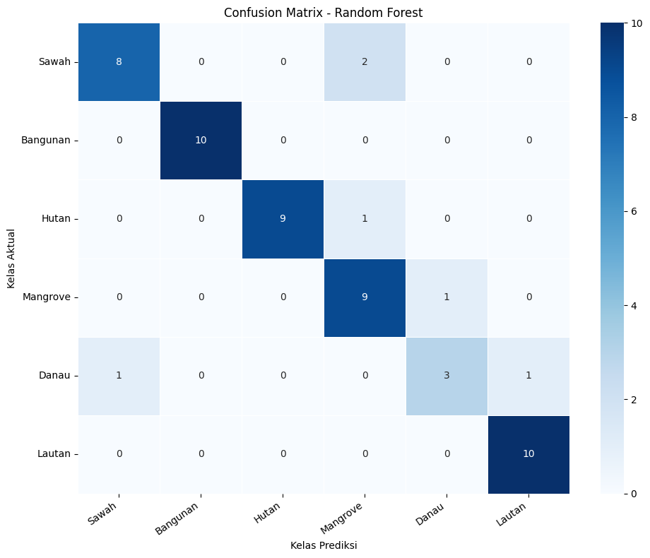
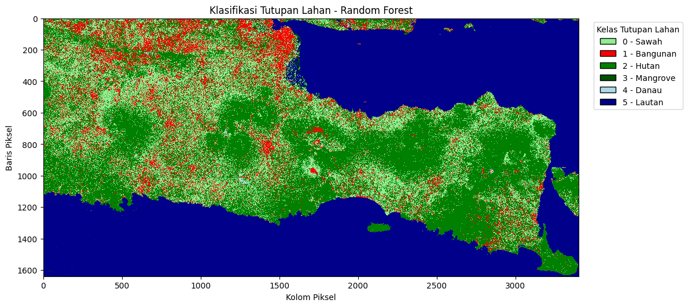

Analisis dan Klasifikasi Tutupan Lahan Provinsi Jawa Timur Berbasis Citra Sentinel-2A#
1. Business Understanding#
1.1 Latar Belakang#
Tutupan lahan merupakan informasi penting untuk memahami kondisi geografis Provinsi Jawa Timur, seperti kawasan pertanian, permukiman, hutan, mangrove, dan perairan. Identifikasi tutupan lahan dapat dilakukan menggunakan citra satelit Sentinel-2A yang menyediakan informasi spektral permukaan bumi.
Pada proyek ini, citra Sentinel-2A diolah menggunakan Sistem Informasi Geografis (SIG) untuk memperoleh fitur berupa lima band spektral, yaitu B02, B03, B04, B08, dan B11, serta dua indeks spektral, yaitu NDVI dan NDWI. Dataset yang digunakan terdiri atas 272 data sampel yang dibagi menjadi data pelatihan (training) dan data pengujian (testing) dengan perbandingan 80:20, yaitu sekitar 217 data training dan 55 data testing.
Klasifikasi dilakukan menggunakan algoritma Random Forest untuk memprediksi kelas tutupan lahan berdasarkan fitur yang tersedia. Performa model dievaluasi menggunakan metrik akurasi, classification report, dan confusion matrix. Hasil klasifikasi selanjutnya disajikan dalam bentuk peta digital untuk mendukung analisis spasial tutupan lahan di Provinsi Jawa Timur.
1.2 Tujuan Proyek#
Tujuan dari proyek ini adalah:
Mengidentifikasi karakteristik tutupan lahan di Provinsi Jawa Timur berdasarkan citra Sentinel-2A.
Mengolah band spektral dan indeks spektral sebagai fitur klasifikasi.
Membangun model klasifikasi tutupan lahan menggunakan algoritma Random Forest.
Mengevaluasi performa model menggunakan data testing.
Menghasilkan peta digital hasil klasifikasi tutupan lahan.
2. Data Understanding#
2.1 Sumber dan Karakteristik Data#
Data yang digunakan dalam proyek ini terdiri atas citra satelit Sentinel-2A Level-2A dan data sampel geospasial yang berisi informasi kelas tutupan lahan. Citra satelit berfungsi sebagai sumber informasi spektral, sedangkan data sampel digunakan sebagai acuan dalam proses pelatihan model.
Pengambilan citra dilakukan melalui layanan openEO dengan memanfaatkan koleksi data Copernicus. Data citra diproses menggunakan komposit median untuk merangkum pengamatan dalam periode yang ditentukan. Selanjutnya, nilai piksel pada lokasi sampel diekstraksi untuk membentuk dataset yang digunakan dalam klasifikasi.
2.2 Kategori Tutupan Lahan#
Klasifikasi dirancang untuk membedakan enam kategori tutupan lahan, yaitu:
Sawah: lahan pertanian yang digunakan untuk budidaya tanaman.
Bangunan: kawasan permukiman dan permukaan terbangun.
Hutan: wilayah yang didominasi oleh pepohonan.
Mangrove: vegetasi yang tumbuh di lingkungan pesisir.
Danau: badan air yang berada di daratan.
Lautan: wilayah perairan laut.
Setiap kategori direpresentasikan menggunakan label numerik agar dapat diproses oleh algoritma klasifikasi. Ketersediaan sampel untuk setiap kategori perlu diperiksa sebelum model dilatih.
2.3 Deskripsi Fitur dan Perhitungan Indeks Spektral#
Klasifikasi tutupan lahan menggunakan tujuh fitur, yaitu lima band spektral Sentinel-2A dan dua indeks spektral, NDVI dan NDWI, sebagai masukan model Random Forest.
A. Band Spektral Sentinel-2A
B02 (Blue): Memberikan informasi pantulan spektrum biru, terutama pada perairan.
B03 (Green): Memberikan informasi karakteristik vegetasi dan perairan.
B04 (Red): Membantu analisis vegetasi dan digunakan dalam perhitungan NDVI.
B08 (NIR): Membedakan karakteristik vegetasi dan air serta digunakan dalam perhitungan NDVI dan NDWI.
B11 (SWIR): Membantu membedakan karakteristik kelembapan permukaan, tanah, dan vegetasi.
B. NDVI (Normalized Difference Vegetation Index)
NDVI digunakan untuk menggambarkan tingkat kehijauan vegetasi dan membantu membedakan vegetasi dari nonvegetasi. Perhitungannya menggunakan band B08 dan B04.
C. NDWI (Normalized Difference Water Index)
NDWI digunakan untuk membantu mengidentifikasi badan air dan membedakannya dari vegetasi maupun kawasan terbangun. Perhitungannya menggunakan band B03 dan B08.
2.4 Instalasi Library#
pip install geopandas
Requirement already satisfied: geopandas in /usr/local/python/3.12.1/lib/python3.12/site-packages (1.1.4)
Requirement already satisfied: numpy>=1.24 in /usr/local/python/3.12.1/lib/python3.12/site-packages (from geopandas) (2.5.2)
Requirement already satisfied: pyogrio>=0.7.2 in /usr/local/python/3.12.1/lib/python3.12/site-packages (from geopandas) (0.13.0)
Requirement already satisfied: packaging in /home/codespace/.local/lib/python3.12/site-packages (from geopandas) (26.0)
Requirement already satisfied: pandas>=2.0.0 in /usr/local/python/3.12.1/lib/python3.12/site-packages (from geopandas) (2.3.3)
Requirement already satisfied: pyproj>=3.5.0 in /usr/local/python/3.12.1/lib/python3.12/site-packages (from geopandas) (3.7.2)
Requirement already satisfied: shapely>=2.0.0 in /usr/local/python/3.12.1/lib/python3.12/site-packages (from geopandas) (2.1.2)
Requirement already satisfied: python-dateutil>=2.8.2 in /home/codespace/.local/lib/python3.12/site-packages (from pandas>=2.0.0->geopandas) (2.9.0.post0)
Requirement already satisfied: pytz>=2020.1 in /usr/local/python/3.12.1/lib/python3.12/site-packages (from pandas>=2.0.0->geopandas) (2026.3.post1)
Requirement already satisfied: tzdata>=2022.7 in /home/codespace/.local/lib/python3.12/site-packages (from pandas>=2.0.0->geopandas) (2025.3)
Requirement already satisfied: certifi in /home/codespace/.local/lib/python3.12/site-packages (from pyogrio>=0.7.2->geopandas) (2026.2.25)
Requirement already satisfied: six>=1.5 in /home/codespace/.local/lib/python3.12/site-packages (from python-dateutil>=2.8.2->pandas>=2.0.0->geopandas) (1.17.0)
[notice] A new release of pip is available: 26.0.1 -> 26.2.1
[notice] To update, run: python3 -m pip install --upgrade pip
Note: you may need to restart the kernel to use updated packages.
pip install openeo
Requirement already satisfied: openeo in /usr/local/python/3.12.1/lib/python3.12/site-packages (0.51.0)
Requirement already satisfied: requests>=2.26.0 in /home/codespace/.local/lib/python3.12/site-packages (from openeo) (2.32.5)
Requirement already satisfied: urllib3>=1.9.0 in /home/codespace/.local/lib/python3.12/site-packages (from openeo) (2.6.3)
Requirement already satisfied: shapely>=1.6.4 in /usr/local/python/3.12.1/lib/python3.12/site-packages (from openeo) (2.1.2)
Requirement already satisfied: numpy>=1.17.0 in /usr/local/python/3.12.1/lib/python3.12/site-packages (from openeo) (2.5.2)
Requirement already satisfied: xarray<2025.01.2,>=0.12.3 in /usr/local/python/3.12.1/lib/python3.12/site-packages (from openeo) (2025.1.1)
Requirement already satisfied: pandas<3.0.0,>0.20.0 in /usr/local/python/3.12.1/lib/python3.12/site-packages (from openeo) (2.3.3)
Requirement already satisfied: pystac>=1.5.0 in /usr/local/python/3.12.1/lib/python3.12/site-packages (from openeo) (1.15.2)
Requirement already satisfied: deprecated>=1.2.12 in /usr/local/python/3.12.1/lib/python3.12/site-packages (from openeo) (1.3.1)
Requirement already satisfied: geopandas>=0.14 in /usr/local/python/3.12.1/lib/python3.12/site-packages (from openeo) (1.1.4)
Requirement already satisfied: python-dateutil>=2.8.2 in /home/codespace/.local/lib/python3.12/site-packages (from pandas<3.0.0,>0.20.0->openeo) (2.9.0.post0)
Requirement already satisfied: pytz>=2020.1 in /usr/local/python/3.12.1/lib/python3.12/site-packages (from pandas<3.0.0,>0.20.0->openeo) (2026.3.post1)
Requirement already satisfied: tzdata>=2022.7 in /home/codespace/.local/lib/python3.12/site-packages (from pandas<3.0.0,>0.20.0->openeo) (2025.3)
Requirement already satisfied: packaging>=23.2 in /home/codespace/.local/lib/python3.12/site-packages (from xarray<2025.01.2,>=0.12.3->openeo) (26.0)
Requirement already satisfied: wrapt<3,>=1.10 in /usr/local/python/3.12.1/lib/python3.12/site-packages (from deprecated>=1.2.12->openeo) (2.4.0)
Requirement already satisfied: pyogrio>=0.7.2 in /usr/local/python/3.12.1/lib/python3.12/site-packages (from geopandas>=0.14->openeo) (0.13.0)
Requirement already satisfied: pyproj>=3.5.0 in /usr/local/python/3.12.1/lib/python3.12/site-packages (from geopandas>=0.14->openeo) (3.7.2)
Requirement already satisfied: certifi in /home/codespace/.local/lib/python3.12/site-packages (from pyogrio>=0.7.2->geopandas>=0.14->openeo) (2026.2.25)
Requirement already satisfied: pystac-core<2,>=1.15.0 in /usr/local/python/3.12.1/lib/python3.12/site-packages (from pystac>=1.5.0->openeo) (1.15.2)
Requirement already satisfied: pystac-ext-classification in /usr/local/python/3.12.1/lib/python3.12/site-packages (from pystac>=1.5.0->openeo) (2.0.1)
Requirement already satisfied: pystac-ext-datacube in /usr/local/python/3.12.1/lib/python3.12/site-packages (from pystac>=1.5.0->openeo) (2.2.1)
Requirement already satisfied: pystac-ext-eo in /usr/local/python/3.12.1/lib/python3.12/site-packages (from pystac>=1.5.0->openeo) (1.1.1)
Requirement already satisfied: pystac-ext-file in /usr/local/python/3.12.1/lib/python3.12/site-packages (from pystac>=1.5.0->openeo) (2.1.1)
Requirement already satisfied: pystac-ext-grid in /usr/local/python/3.12.1/lib/python3.12/site-packages (from pystac>=1.5.0->openeo) (1.1.1)
Requirement already satisfied: pystac-ext-item-assets in /usr/local/python/3.12.1/lib/python3.12/site-packages (from pystac>=1.5.0->openeo) (1.0.1)
Requirement already satisfied: pystac-ext-label in /usr/local/python/3.12.1/lib/python3.12/site-packages (from pystac>=1.5.0->openeo) (1.0.2)
Requirement already satisfied: pystac-ext-mgrs in /usr/local/python/3.12.1/lib/python3.12/site-packages (from pystac>=1.5.0->openeo) (1.0.1)
Requirement already satisfied: pystac-ext-mlm in /usr/local/python/3.12.1/lib/python3.12/site-packages (from pystac>=1.5.0->openeo) (1.4.1)
Requirement already satisfied: pystac-ext-pointcloud in /usr/local/python/3.12.1/lib/python3.12/site-packages (from pystac>=1.5.0->openeo) (1.0.1)
Requirement already satisfied: pystac-ext-projection in /usr/local/python/3.12.1/lib/python3.12/site-packages (from pystac>=1.5.0->openeo) (2.0.1)
Requirement already satisfied: pystac-ext-raster in /usr/local/python/3.12.1/lib/python3.12/site-packages (from pystac>=1.5.0->openeo) (1.1.1)
Requirement already satisfied: pystac-ext-render in /usr/local/python/3.12.1/lib/python3.12/site-packages (from pystac>=1.5.0->openeo) (2.0.0)
Requirement already satisfied: pystac-ext-sar in /usr/local/python/3.12.1/lib/python3.12/site-packages (from pystac>=1.5.0->openeo) (1.0.1)
Requirement already satisfied: pystac-ext-sat in /usr/local/python/3.12.1/lib/python3.12/site-packages (from pystac>=1.5.0->openeo) (1.0.1)
Requirement already satisfied: pystac-ext-scientific in /usr/local/python/3.12.1/lib/python3.12/site-packages (from pystac>=1.5.0->openeo) (1.0.1)
Requirement already satisfied: pystac-ext-storage in /usr/local/python/3.12.1/lib/python3.12/site-packages (from pystac>=1.5.0->openeo) (2.0.1)
Requirement already satisfied: pystac-ext-table in /usr/local/python/3.12.1/lib/python3.12/site-packages (from pystac>=1.5.0->openeo) (1.2.1)
Requirement already satisfied: pystac-ext-timestamps in /usr/local/python/3.12.1/lib/python3.12/site-packages (from pystac>=1.5.0->openeo) (1.1.1)
Requirement already satisfied: pystac-ext-version in /usr/local/python/3.12.1/lib/python3.12/site-packages (from pystac>=1.5.0->openeo) (1.2.1)
Requirement already satisfied: pystac-ext-view in /usr/local/python/3.12.1/lib/python3.12/site-packages (from pystac>=1.5.0->openeo) (1.0.1)
Requirement already satisfied: pystac-ext-xarray-assets in /usr/local/python/3.12.1/lib/python3.12/site-packages (from pystac>=1.5.0->openeo) (1.0.1)
Requirement already satisfied: six>=1.5 in /home/codespace/.local/lib/python3.12/site-packages (from python-dateutil>=2.8.2->pandas<3.0.0,>0.20.0->openeo) (1.17.0)
Requirement already satisfied: charset_normalizer<4,>=2 in /home/codespace/.local/lib/python3.12/site-packages (from requests>=2.26.0->openeo) (3.4.5)
Requirement already satisfied: idna<4,>=2.5 in /home/codespace/.local/lib/python3.12/site-packages (from requests>=2.26.0->openeo) (3.11)
[notice] A new release of pip is available: 26.0.1 -> 26.2.1
[notice] To update, run: python3 -m pip install --upgrade pip
Note: you may need to restart the kernel to use updated packages.
%pip install scikit-learn
Requirement already satisfied: scikit-learn in /usr/local/python/3.12.1/lib/python3.12/site-packages (1.9.1)
Requirement already satisfied: numpy>=1.24.1 in /usr/local/python/3.12.1/lib/python3.12/site-packages (from scikit-learn) (2.5.2)
Requirement already satisfied: scipy>=1.10.0 in /usr/local/python/3.12.1/lib/python3.12/site-packages (from scikit-learn) (1.18.1)
Requirement already satisfied: joblib>=1.4.0 in /usr/local/python/3.12.1/lib/python3.12/site-packages (from scikit-learn) (1.6.0)
Requirement already satisfied: narwhals>=2.0.1 in /usr/local/python/3.12.1/lib/python3.12/site-packages (from scikit-learn) (2.26.0)
Requirement already satisfied: threadpoolctl>=3.5.0 in /usr/local/python/3.12.1/lib/python3.12/site-packages (from scikit-learn) (3.7.0)
Requirement already satisfied: cloudpickle>=3.0 in /usr/local/python/3.12.1/lib/python3.12/site-packages (from joblib>=1.4.0->scikit-learn) (3.1.2)
[notice] A new release of pip is available: 26.0.1 -> 26.2.1
[notice] To update, run: python3 -m pip install --upgrade pip
Note: you may need to restart the kernel to use updated packages.
pip install rasterio
Requirement already satisfied: rasterio in /usr/local/python/3.12.1/lib/python3.12/site-packages (1.5.2)
Requirement already satisfied: affine in /usr/local/python/3.12.1/lib/python3.12/site-packages (from rasterio) (3.0.1)
Requirement already satisfied: attrs in /home/codespace/.local/lib/python3.12/site-packages (from rasterio) (25.4.0)
Requirement already satisfied: certifi in /home/codespace/.local/lib/python3.12/site-packages (from rasterio) (2026.2.25)
Requirement already satisfied: click!=8.2.*,>=4.0 in /usr/local/python/3.12.1/lib/python3.12/site-packages (from rasterio) (8.5.0)
Requirement already satisfied: numpy>=2 in /usr/local/python/3.12.1/lib/python3.12/site-packages (from rasterio) (2.5.2)
Requirement already satisfied: pyparsing>=3.0 in /usr/local/python/3.12.1/lib/python3.12/site-packages (from rasterio) (3.3.3)
[notice] A new release of pip is available: 26.0.1 -> 26.2.1
[notice] To update, run: python3 -m pip install --upgrade pip
Note: you may need to restart the kernel to use updated packages.
pip install seaborn
Requirement already satisfied: seaborn in /usr/local/python/3.12.1/lib/python3.12/site-packages (0.13.2)
Requirement already satisfied: numpy!=1.24.0,>=1.20 in /usr/local/python/3.12.1/lib/python3.12/site-packages (from seaborn) (2.5.2)
Requirement already satisfied: pandas>=1.2 in /usr/local/python/3.12.1/lib/python3.12/site-packages (from seaborn) (2.3.3)
Requirement already satisfied: matplotlib!=3.6.1,>=3.4 in /usr/local/python/3.12.1/lib/python3.12/site-packages (from seaborn) (3.11.2)
Requirement already satisfied: contourpy>=1.0.1 in /usr/local/python/3.12.1/lib/python3.12/site-packages (from matplotlib!=3.6.1,>=3.4->seaborn) (1.4.0)
Requirement already satisfied: cycler>=0.10 in /usr/local/python/3.12.1/lib/python3.12/site-packages (from matplotlib!=3.6.1,>=3.4->seaborn) (0.12.1)
Requirement already satisfied: fonttools>=4.28.2 in /usr/local/python/3.12.1/lib/python3.12/site-packages (from matplotlib!=3.6.1,>=3.4->seaborn) (4.66.1)
Requirement already satisfied: kiwisolver>=1.3.1 in /usr/local/python/3.12.1/lib/python3.12/site-packages (from matplotlib!=3.6.1,>=3.4->seaborn) (1.5.1)
Requirement already satisfied: packaging>=20.0 in /home/codespace/.local/lib/python3.12/site-packages (from matplotlib!=3.6.1,>=3.4->seaborn) (26.0)
Requirement already satisfied: pillow>=9 in /usr/local/python/3.12.1/lib/python3.12/site-packages (from matplotlib!=3.6.1,>=3.4->seaborn) (12.3.0)
Requirement already satisfied: pyparsing>=3 in /usr/local/python/3.12.1/lib/python3.12/site-packages (from matplotlib!=3.6.1,>=3.4->seaborn) (3.3.3)
Requirement already satisfied: python-dateutil>=2.7 in /home/codespace/.local/lib/python3.12/site-packages (from matplotlib!=3.6.1,>=3.4->seaborn) (2.9.0.post0)
Requirement already satisfied: pytz>=2020.1 in /usr/local/python/3.12.1/lib/python3.12/site-packages (from pandas>=1.2->seaborn) (2026.3.post1)
Requirement already satisfied: tzdata>=2022.7 in /home/codespace/.local/lib/python3.12/site-packages (from pandas>=1.2->seaborn) (2025.3)
Requirement already satisfied: six>=1.5 in /home/codespace/.local/lib/python3.12/site-packages (from python-dateutil>=2.7->matplotlib!=3.6.1,>=3.4->seaborn) (1.17.0)
[notice] A new release of pip is available: 26.0.1 -> 26.2.1
[notice] To update, run: python3 -m pip install --upgrade pip
Note: you may need to restart the kernel to use updated packages.
!pip install -q geopandas openeo shapely
[notice] A new release of pip is available: 26.0.1 -> 26.2.1
[notice] To update, run: python3 -m pip install --upgrade pip
3. Data Preparation#
Tahap persiapan data dilakukan sebelum proses pemodelan untuk memastikan data sampel dan citra Sentinel-2A siap digunakan. Tahapan ini meliputi penggabungan data sampel tutupan lahan dari Shapefile, pengambilan nilai piksel berdasarkan lokasi sampel, perhitungan indeks spektral NDVI dan NDWI, serta pembersihan data dari nilai yang tidak valid. Hasil akhirnya disimpan dalam format CSV yang berisi fitur spektral, indeks vegetasi dan air, serta label kelas tutupan lahan untuk digunakan pada tahap pemodelan Random Forest.
3.1 Pengumpulan dan Penggabungan Data Sampel Tutupan Lahan#
from google.colab import files
import geopandas as gpd
import pandas as pd
import zipfile
import io
# 1. Upload file ZIP melalui Choose File
uploaded = files.upload()
# 2. Membaca file berdasarkan nama yang diunggah
daftar_kelas = {
"sawah": ("Sawah", 0),
"bangunan": ("Bangunan", 1),
"hutan": ("Hutan", 2),
"mangrove": ("Mangrove", 3),
"danau": ("Danau", 4),
"lautan": ("Lautan", 5)
}
kumpulan_data = []
for nama_file, isi_file in uploaded.items():
nama_dasar = nama_file.lower().replace(".zip", "")
kelas_ditemukan = None
for kata_kunci, informasi in daftar_kelas.items():
if kata_kunci in nama_dasar:
kelas_ditemukan = informasi
break
if kelas_ditemukan is None:
print("File dilewati karena nama kelas tidak dikenali:", nama_file)
continue
with zipfile.ZipFile(io.BytesIO(isi_file)) as arsip:
nama_shp = [
nama for nama in arsip.namelist()
if nama.lower().endswith(".shp")
]
if not nama_shp:
print("Tidak ditemukan file SHP:", nama_file)
continue
with arsip.open(nama_shp[0]) as file_shp:
data = gpd.read_file(
"zip://" + nama_file + "!/" + nama_shp[0]
) if False else None
# Membaca shapefile langsung dari ZIP yang diunggah
data = gpd.read_file(
"zip:///" + "/content/" + nama_file + "!/" + nama_shp[0]
)
if data.crs is None:
raise ValueError("CRS tidak ditemukan pada " + nama_file)
data = data.to_crs("EPSG:4326")
nama_kelas, kode_kelas = kelas_ditemukan
data["label_teks"] = nama_kelas
data["label"] = kode_kelas
kumpulan_data.append(data)
print(nama_kelas, ":", len(data), "sampel")
# 3. Menggabungkan semua data
if not kumpulan_data:
raise ValueError("Tidak ada dataset yang berhasil dibaca.")
data_gabungan = gpd.GeoDataFrame(
pd.concat(kumpulan_data, ignore_index=True),
crs="EPSG:4326"
)
print("\nTotal sampel:", len(data_gabungan))
print(data_gabungan["label_teks"].value_counts())
# 4. Menentukan batas wilayah
min_x, min_y, max_x, max_y = data_gabungan.total_bounds
buffer = 0.005
batas_wilayah = {
"west": float(min_x - buffer),
"south": float(min_y - buffer),
"east": float(max_x + buffer),
"north": float(max_y + buffer)
}
print("\nBatas wilayah:", batas_wilayah)
---------------------------------------------------------------------------
ModuleNotFoundError Traceback (most recent call last)
Cell In[7], line 1
----> 1 from google.colab import files
2 import geopandas as gpd
3 import pandas as pd
ModuleNotFoundError: No module named 'google'
3.2 Pengambilan dan Pengolahan Citra Sentinel-2A#
import openeo
import time
import os
# 1. Koneksi ke Copernicus Data Space
koneksi = openeo.connect(
"openeo.dataspace.copernicus.eu"
)
koneksi.authenticate_oidc()
# 2. Mengambil koleksi Sentinel-2
kubus_citra = koneksi.load_collection(
"SENTINEL2_L2A",
spatial_extent=batas_wilayah,
temporal_extent=["2026-01-01", "2026-09-01"],
bands=["B02", "B03", "B04", "B08", "B11"],
max_cloud_cover=10
)
# 3. Membuat komposit median
komposit_citra = kubus_citra.median_time()
# 4. Mengatur resolusi spasial
komposit_citra = komposit_citra.resample_spatial(
resolution=0.001,
projection=4326
)
# 5. Membuat dan menjalankan batch job
job_citra = komposit_citra.create_job(
title="Sentinel2_Klasifikasi_Multikelas",
out_format="GTiff"
)
job_citra.start()
# 6. Memantau proses
status = job_citra.status()
while status in ["created", "queued", "running"]:
print("Status pemrosesan:", status)
time.sleep(30)
status = job_citra.status()
# 7. Mengunduh hasil
folder_output = "hasil_sentinel2"
if status == "finished":
os.makedirs(folder_output, exist_ok=True)
job_citra.download_results(folder_output)
print("Berhasil! Hasil citra disimpan di:", folder_output)
# Menampilkan file hasil
print(os.listdir(folder_output))
else:
print("Job gagal dengan status:", status)
for log in job_citra.logs():
print(log)
Authenticated using refresh token.
Status pemrosesan: queued
Status pemrosesan: queued
Status pemrosesan: queued
Status pemrosesan: queued
Status pemrosesan: queued
Status pemrosesan: queued
Status pemrosesan: queued
Status pemrosesan: queued
Status pemrosesan: queued
Status pemrosesan: queued
Status pemrosesan: queued
Status pemrosesan: queued
Status pemrosesan: queued
Status pemrosesan: queued
Status pemrosesan: queued
Status pemrosesan: queued
Status pemrosesan: queued
Status pemrosesan: queued
Status pemrosesan: queued
Status pemrosesan: queued
Status pemrosesan: queued
Status pemrosesan: queued
Status pemrosesan: queued
Status pemrosesan: queued
Status pemrosesan: queued
Status pemrosesan: queued
Status pemrosesan: queued
Status pemrosesan: queued
Status pemrosesan: queued
Status pemrosesan: queued
Status pemrosesan: queued
Status pemrosesan: queued
Status pemrosesan: queued
Status pemrosesan: running
Status pemrosesan: running
Status pemrosesan: running
Status pemrosesan: running
Status pemrosesan: running
Status pemrosesan: running
Status pemrosesan: running
Status pemrosesan: running
Status pemrosesan: running
Status pemrosesan: running
Status pemrosesan: running
Status pemrosesan: running
Status pemrosesan: running
Status pemrosesan: running
Status pemrosesan: running
Status pemrosesan: running
Status pemrosesan: running
Status pemrosesan: running
Status pemrosesan: running
Status pemrosesan: running
Status pemrosesan: running
Status pemrosesan: running
Status pemrosesan: running
Status pemrosesan: running
Status pemrosesan: running
Status pemrosesan: running
Status pemrosesan: running
Status pemrosesan: running
Status pemrosesan: running
Status pemrosesan: running
Status pemrosesan: running
Status pemrosesan: running
Status pemrosesan: running
Status pemrosesan: running
Status pemrosesan: running
Status pemrosesan: running
Status pemrosesan: running
Status pemrosesan: running
Status pemrosesan: running
Status pemrosesan: running
Status pemrosesan: running
Status pemrosesan: running
Status pemrosesan: running
Status pemrosesan: running
Status pemrosesan: running
Status pemrosesan: running
Status pemrosesan: running
Status pemrosesan: running
Status pemrosesan: running
Status pemrosesan: running
Status pemrosesan: running
Status pemrosesan: running
Status pemrosesan: running
Status pemrosesan: running
Status pemrosesan: running
/tmp/ipykernel_59176/1000495113.py:51: UserDeprecationWarning: Call to deprecated method download_results. (Instead use `BatchJob.get_results` and the more flexible download functionality of `JobResults`) -- Deprecated since version 0.4.10.
job_citra.download_results(folder_output)
/usr/local/lib/python3.13/dist-packages/openeo/rest/job.py:193: UserDeprecationWarning: Call to deprecated method get_result. (Use `BatchJob.get_results` instead.) -- Deprecated since version 0.4.10.
return self.get_result().download_files(target)
/usr/local/lib/python3.13/dist-packages/openeo/rest/job.py:197: UserDeprecationWarning: Call to deprecated class _Result. (Use `JobResults` instead) -- Deprecated since version 0.4.10.
return _Result(self)
Berhasil! Hasil citra disimpan di: hasil_sentinel2
['openEO.tif']
3.3 Pemeriksaan dan Identifikasi File Citra#
Tahap ini dilakukan untuk memeriksa file dan folder yang tersedia pada lingkungan Google Colab setelah proses pengambilan citra Sentinel-2A. Pemeriksaan dilakukan dengan menampilkan lokasi kerja, daftar file dan folder, serta mencari file citra dengan ekstensi .tif atau .tiff di dalam direktori /content.
File GeoTIFF yang ditemukan selanjutnya dapat digunakan pada tahap pemeriksaan informasi citra dan ekstraksi nilai piksel. Tahap ini membantu memastikan keberadaan file citra hasil pengolahan sebelum proses persiapan data dilanjutkan.
import os
print("Lokasi kerja Colab:", os.getcwd())
print("\nIsi folder kerja:")
for nama in os.listdir("."):
if os.path.isdir(nama):
print(f"[FOLDER] {nama}")
else:
print(f"[FILE] {nama}")
print("\nMencari file GeoTIFF di seluruh folder kerja...")
for akar, folder, daftar_file in os.walk("/content"):
for nama in daftar_file:
if nama.lower().endswith((".tif", ".tiff")):
print("Ditemukan:", os.path.join(akar, nama))
Lokasi kerja Colab: /content
Isi folder kerja:
[FILE] lautan (1).zip
[FILE] danau.zip
[FOLDER] hasil_sentinel2
[FILE] mangrove (1).zip
[FILE] lautan.zip
[FILE] hutan (1).zip
[FILE] mangrove.zip
[FILE] dataset_uts_klasifikasi.csv
[FILE] bangunan (1).zip
[FILE] sawah_jatim (1).zip
[FILE] sawah_jatim.zip
[FILE] danau (1).zip
[FILE] hutan.zip
[FILE] bangunan.zip
Mencari file GeoTIFF di seluruh folder kerja...
Ditemukan: /content/hasil_sentinel2/openEO.tif
3.4 Pemeriksaan Informasi dan Metadata Citra Sentinel-2A#
Tahap ini dilakukan untuk memeriksa informasi dasar citra Sentinel-2A hasil pengolahan yang tersimpan dalam format GeoTIFF. Pemeriksaan menggunakan library Rasterio untuk membaca metadata citra, meliputi format file, jumlah band, ukuran raster, sistem koordinat (CRS), resolusi spasial, batas koordinat, dan tipe data setiap band.
Informasi tersebut digunakan untuk mengetahui karakteristik teknis citra sebelum dilakukan ekstraksi nilai piksel. Pemeriksaan ini juga membantu memastikan bahwa file citra dapat dibaca dan informasi spasialnya tersedia untuk mendukung proses pengolahan data selanjutnya.
import os
import rasterio
file_citra = "/content/hasil_sentinel2/openEO.tif"
with rasterio.open(file_citra) as src:
print("File citra berhasil dibaca!")
print("Format:", src.driver)
print("Jumlah band:", src.count)
print("Ukuran raster:", src.width, "x", src.height)
print("CRS:", src.crs)
print("Resolusi:", src.res)
print("Batas koordinat:", src.bounds)
print("Tipe data:", src.dtypes)
File citra berhasil dibaca!
Format: GTiff
Jumlah band: 5
Ukuran raster: 3402 x 1640
CRS: EPSG:4326
Resolusi: (0.0010000000000000002, 0.0009999999999999994)
Batas koordinat: BoundingBox(left=111.20948320931704, bottom=-8.786054103228544, right=114.61148320931704, top=-7.146054103228545)
Tipe data: ('int16', 'int16', 'int16', 'int16', 'int16')
3.5 Ekstraksi Nilai Piksel Citra Berdasarkan Sampel Tutupan Lahan#
import os
import numpy as np
import pandas as pd
import geopandas as gpd
import rasterio
print("=== DATA PREPARATION ===")
file_raster = "/content/hasil_sentinel2/openEO.tif"
if not os.path.exists(file_raster):
raise FileNotFoundError(
f"Raster tidak ditemukan: {file_raster}"
)
# Cari variabel data sampel yang tersedia
if "data_latih" in globals():
sampel = data_latih.copy()
elif "gdf_gabungan" in globals():
sampel = gdf_gabungan.copy()
else:
raise NameError(
"Data sampel belum tersedia. Jalankan kode "
"pembacaan dan penggabungan ZIP terlebih dahulu."
)
print("Kolom data sampel:", sampel.columns.tolist())
print("Jumlah sampel:", len(sampel))
# Deteksi kolom kelas dan label secara otomatis
pilihan_kelas = [
"kategori", "label_teks", "kelas", "Kelas",
"class", "nama_kelas", "jenis"
]
pilihan_label = [
"kode_kelas", "label", "Label", "kode",
"class_id", "id_kelas"
]
kolom_kelas = next(
(c for c in pilihan_kelas if c in sampel.columns), None
)
kolom_label = next(
(c for c in pilihan_label if c in sampel.columns), None
)
# Jika kolom nama kelas tidak tersedia, gunakan label numerik
if kolom_kelas is None and kolom_label is not None:
peta_kelas = {
0: "Sawah",
1: "Bangunan",
2: "Hutan",
3: "Mangrove",
4: "Danau",
5: "Lautan"
}
sampel["Kelas"] = (
pd.to_numeric(sampel[kolom_label], errors="coerce")
.map(peta_kelas)
)
kolom_kelas = "Kelas"
if kolom_label is None and kolom_kelas is not None:
peta_label = {
"Sawah": 0,
"Bangunan": 1,
"Lahan Hijau": 2,
"Hutan": 2,
"Mangrove": 3,
"Danau": 4,
"Ranu": 4,
"Lautan": 5,
"Perairan Laut": 5
}
sampel["Label"] = sampel[kolom_kelas].map(peta_label)
kolom_label = "Label"
if kolom_kelas is None or kolom_label is None:
raise ValueError(
"Kolom kelas/label tidak berhasil dikenali. "
"Periksa daftar kolom yang tercetak di atas."
)
# Pastikan geometri tersedia
sampel = sampel[
sampel.geometry.notna() & ~sampel.geometry.is_empty
].copy()
with rasterio.open(file_raster) as src:
print("\nCRS raster:", src.crs)
print("Jumlah band:", src.count)
print("Ukuran raster:", src.width, "x", src.height)
if src.count < 5:
raise ValueError("Raster harus memiliki minimal 5 band.")
# Hitung titik tengah di CRS proyeksi
sampel_utm = sampel.to_crs(sampel.estimate_utm_crs())
titik_utm = sampel_utm.geometry.centroid
titik_raster = gpd.GeoSeries(
titik_utm, crs=sampel_utm.crs
).to_crs(src.crs)
koordinat = list(zip(titik_raster.x, titik_raster.y))
# Ambil nilai piksel dan ubah ke float agar NaN dapat digunakan
piksel = np.ma.vstack(
list(src.sample(koordinat, masked=True))
)
nilai_band = piksel.astype(np.float32).filled(np.nan)
# Periksa piksel di luar batas raster
for i, (x, y) in enumerate(koordinat):
row, col = src.index(x, y)
if not (
0 <= row < src.height and
0 <= col < src.width
):
nilai_band[i, :] = np.nan
# Susun dataset
df_dataset = pd.DataFrame(
nilai_band[:, :5],
columns=["B02", "B03", "B04", "B08", "B11"]
)
df_dataset["Kelas"] = sampel[kolom_kelas].to_numpy()
df_dataset["Label"] = sampel[kolom_label].to_numpy()
titik_wgs84 = sampel_utm.geometry.centroid.to_crs("EPSG:4326")
df_dataset["Longitude"] = titik_wgs84.x.to_numpy()
df_dataset["Latitude"] = titik_wgs84.y.to_numpy()
print("\nEkstraksi piksel selesai.")
print("Jumlah sampel awal:", len(df_dataset))
display(df_dataset.head())
=== DATA PREPARATION ===
Kolom data sampel: ['FID', 'geometry', 'kelas', 'label']
Jumlah sampel: 272
CRS raster: EPSG:4326
Jumlah band: 5
Ukuran raster: 3402 x 1640
Ekstraksi piksel selesai.
Jumlah sampel awal: 272
| B02 | B03 | B04 | B08 | B11 | Kelas | Label | Longitude | Latitude | |
|---|---|---|---|---|---|---|---|---|---|
| 0 | 1117.0 | 1268.0 | 1521.0 | 1766.0 | 2878.0 | Bangunan | 1 | 112.718531 | -7.249539 |
| 1 | 1091.0 | 1221.0 | 1379.0 | 1609.0 | 2176.0 | Bangunan | 1 | 112.721986 | -7.247514 |
| 2 | 1087.0 | 1235.0 | 1339.0 | 1456.0 | 1695.0 | Bangunan | 1 | 112.724004 | -7.245616 |
| 3 | 872.0 | 1092.0 | 1375.0 | 2051.0 | 2675.0 | Bangunan | 1 | 112.724291 | -7.247208 |
| 4 | 1109.0 | 1215.0 | 1316.0 | 1460.0 | 1718.0 | Bangunan | 1 | 112.724945 | -7.246042 |
3.6 Perhitungan Indeks Spektral dan Pembersihan Dataset#
Tahap ini dilakukan untuk menghitung indeks spektral NDVI dan NDWI berdasarkan nilai band citra Sentinel-2A yang telah diekstraksi. NDVI digunakan untuk menggambarkan kondisi vegetasi, sedangkan NDWI digunakan untuk membantu mengidentifikasi karakteristik badan air.
Perhitungan NDVI menggunakan band inframerah dekat (B08) dan merah (B04), dengan rumus:
Sementara itu, NDWI dihitung menggunakan band hijau (B03) dan inframerah dekat (B08), dengan rumus:
Penambahan nilai (10^{-6}) pada penyebut bertujuan untuk menghindari pembagian dengan nol. Setelah indeks spektral dihitung, dilakukan pembersihan dataset dengan mengganti nilai tak hingga menjadi nilai kosong dan menghapus baris yang memiliki nilai kosong pada kolom wajib. Dataset kemudian disimpan dalam format CSV agar dapat digunakan pada tahap pemodelan klasifikasi tutupan lahan.
Pada tahap akhir, kode menampilkan jumlah sampel valid, jumlah kolom, dan distribusi sampel pada setiap kelas. File dataset juga diunduh agar dapat digunakan untuk proses analisis selanjutnya.
# Hitung NDVI dan NDWI
df_dataset["NDVI"] = (
(df_dataset["B08"] - df_dataset["B04"]) /
(df_dataset["B08"] + df_dataset["B04"] + 1e-6)
)
df_dataset["NDWI"] = (
(df_dataset["B03"] - df_dataset["B08"]) /
(df_dataset["B03"] + df_dataset["B08"] + 1e-6)
)
# Bersihkan nilai tak valid
df_dataset.replace([np.inf, -np.inf], np.nan, inplace=True)
kolom_wajib = [
"B02", "B03", "B04", "B08", "B11",
"Kelas", "Label", "Longitude", "Latitude"
]
df_dataset.dropna(subset=kolom_wajib, inplace=True)
df_dataset.reset_index(drop=True, inplace=True)
# Simpan CSV
nama_csv = "/content/dataset_uts_klasifikasi.csv"
df_dataset.to_csv(
nama_csv,
index=False,
encoding="utf-8-sig"
)
print("=== DATA PREPARATION SELESAI ===")
print("Jumlah sampel valid:", len(df_dataset))
print("Jumlah kolom:", len(df_dataset.columns))
print("File tersimpan:", nama_csv)
print("\nJumlah sampel per kelas:")
print(df_dataset["Kelas"].value_counts())
print("\nPreview dataset:")
display(df_dataset.head(10))
# Unduh CSV ke komputer
from google.colab import files
files.download(nama_csv)
=== DATA PREPARATION SELESAI ===
Jumlah sampel valid: 272
Jumlah kolom: 11
File tersimpan: /content/dataset_uts_klasifikasi.csv
Jumlah sampel per kelas:
Kelas
Bangunan 50
Hutan 50
Mangrove 50
Lautan 50
Sawah 50
Danau 22
Name: count, dtype: int64
Preview dataset:
| B02 | B03 | B04 | B08 | B11 | Kelas | Label | Longitude | Latitude | NDVI | NDWI | |
|---|---|---|---|---|---|---|---|---|---|---|---|
| 0 | 1117.0 | 1268.0 | 1521.0 | 1766.0 | 2878.0 | Bangunan | 1 | 112.718531 | -7.249539 | 0.074536 | -0.164140 |
| 1 | 1091.0 | 1221.0 | 1379.0 | 1609.0 | 2176.0 | Bangunan | 1 | 112.721986 | -7.247514 | 0.076975 | -0.137102 |
| 2 | 1087.0 | 1235.0 | 1339.0 | 1456.0 | 1695.0 | Bangunan | 1 | 112.724004 | -7.245616 | 0.041860 | -0.082126 |
| 3 | 872.0 | 1092.0 | 1375.0 | 2051.0 | 2675.0 | Bangunan | 1 | 112.724291 | -7.247208 | 0.197315 | -0.305122 |
| 4 | 1109.0 | 1215.0 | 1316.0 | 1460.0 | 1718.0 | Bangunan | 1 | 112.724945 | -7.246042 | 0.051873 | -0.091589 |
| 5 | 1317.0 | 1366.0 | 1595.0 | 1698.0 | 2713.0 | Bangunan | 1 | 112.726343 | -7.245956 | 0.031278 | -0.108355 |
| 6 | 1220.0 | 1373.0 | 1554.0 | 1729.0 | 2789.0 | Bangunan | 1 | 112.726290 | -7.246877 | 0.053305 | -0.114765 |
| 7 | 1244.0 | 1274.0 | 1471.0 | 1519.0 | 2786.0 | Bangunan | 1 | 112.726166 | -7.247502 | 0.016054 | -0.087719 |
| 8 | 1289.0 | 1382.0 | 1618.0 | 1807.0 | 2716.0 | Bangunan | 1 | 112.726110 | -7.248077 | 0.055182 | -0.133271 |
| 9 | 567.0 | 765.0 | 1085.0 | 1759.0 | 2043.0 | Bangunan | 1 | 112.728046 | -7.245395 | 0.236990 | -0.393819 |
4. Modeling dan Evaluation Matriks#
import os
import shutil
import joblib
import numpy as np
import pandas as pd
import matplotlib.pyplot as plt
import seaborn as sns
from google.colab import files
from sklearn.model_selection import train_test_split
from sklearn.ensemble import RandomForestClassifier
from sklearn.metrics import (
accuracy_score,
classification_report,
confusion_matrix
)
# ============================================================
# 1. PERSIAPAN DATA
# ============================================================
fitur_kolom = [
"B02", "B03", "B04", "B08", "B11", "NDVI", "NDWI"
]
# Mapping harus sama dengan cell deployment
nama_kelas = {
0: "Sawah",
1: "Bangunan",
2: "Hutan",
3: "Mangrove",
4: "Danau",
5: "Lautan"
}
label_urut = list(nama_kelas.keys())
nama_urut = list(nama_kelas.values())
if "df_dataset" not in globals():
raise NameError(
"df_dataset belum tersedia. Jalankan cell preprocessing terlebih dahulu."
)
data_model = df_dataset.copy()
kolom_dibutuhkan = fitur_kolom + ["Label"]
kolom_hilang = [
kolom for kolom in kolom_dibutuhkan
if kolom not in data_model.columns
]
if kolom_hilang:
raise ValueError(
f"Kolom berikut tidak ditemukan: {kolom_hilang}"
)
# Pastikan fitur dan label berupa angka
for kolom in kolom_dibutuhkan:
data_model[kolom] = pd.to_numeric(
data_model[kolom], errors="coerce"
)
data_model.replace([np.inf, -np.inf], np.nan, inplace=True)
data_model.dropna(subset=kolom_dibutuhkan, inplace=True)
# Hanya gunakan label bilangan bulat 0 sampai 5
data_model = data_model[
data_model["Label"].isin(label_urut)
& (data_model["Label"] % 1 == 0)
].copy()
data_model["Label"] = data_model["Label"].astype(int)
if data_model.empty:
raise ValueError("Tidak ada data valid untuk pemodelan.")
# Periksa jumlah sampel setiap kelas
jumlah_kelas = (
data_model["Label"]
.value_counts()
.reindex(label_urut, fill_value=0)
)
print("=" * 60)
print("PEMETAAN LABEL DAN DISTRIBUSI DATA")
print("=" * 60)
display(pd.DataFrame({
"Label": label_urut,
"Nama Kelas": nama_urut,
"Jumlah Data": jumlah_kelas.values
}))
print("Total data valid:", len(data_model))
kelas_kurang = jumlah_kelas[jumlah_kelas < 2]
if not kelas_kurang.empty:
raise ValueError(
"Setiap kelas harus memiliki minimal 2 sampel. "
f"Kelas yang kurang data: {kelas_kurang.to_dict()}"
)
# ============================================================
# 2. PEMBAGIAN DATA TRAINING DAN TESTING
# ============================================================
print("\n" + "=" * 60)
print("PEMBAGIAN DATA TRAINING DAN TESTING")
print("=" * 60)
X = data_model[fitur_kolom].copy()
y = data_model["Label"].copy()
X_train, X_test, y_train, y_test = train_test_split(
X,
y,
test_size=0.2,
random_state=21,
stratify=y
)
print("Total data :", len(data_model))
print("Data training :", len(X_train))
print("Data testing :", len(X_test))
print("Jumlah fitur :", len(fitur_kolom))
print("\nDistribusi kelas training:")
display(
y_train.value_counts()
.reindex(label_urut, fill_value=0)
.rename(index=nama_kelas)
.rename("Jumlah")
.to_frame()
)
print("Distribusi kelas testing:")
display(
y_test.value_counts()
.reindex(label_urut, fill_value=0)
.rename(index=nama_kelas)
.rename("Jumlah")
.to_frame()
)
# ============================================================
# 3. TRAINING RANDOM FOREST
# ============================================================
print("\n" + "=" * 60)
print("TRAINING RANDOM FOREST")
print("=" * 60)
model_rf = RandomForestClassifier(
n_estimators=300,
max_depth=None,
min_samples_split=2,
min_samples_leaf=1,
max_features="sqrt",
class_weight="balanced",
random_state=21,
n_jobs=-1
)
model_rf.fit(X_train, y_train)
print("Training selesai.")
print("Fitur model:", list(model_rf.feature_names_in_))
print("Label model:", model_rf.classes_)
# ============================================================
# 4. EVALUASI PADA DATA TESTING
# ============================================================
print("\n" + "=" * 60)
print("EVALUASI RANDOM FOREST")
print("=" * 60)
y_pred = model_rf.predict(X_test)
akurasi = accuracy_score(y_test, y_pred)
jumlah_benar = int((y_test.to_numpy() == y_pred).sum())
jumlah_salah = len(y_test) - jumlah_benar
print("Jumlah data testing :", len(y_test))
print("Prediksi benar :", jumlah_benar)
print("Prediksi salah :", jumlah_salah)
print(f"Akurasi testing : {akurasi * 100:.2f}%")
print("\nCLASSIFICATION REPORT")
laporan = classification_report(
y_test,
y_pred,
labels=label_urut,
target_names=nama_urut,
output_dict=True,
zero_division=0
)
display(pd.DataFrame(laporan).transpose().round(3))
# ============================================================
# 5. CONFUSION MATRIX
# ============================================================
cm = confusion_matrix(
y_test,
y_pred,
labels=label_urut
)
tabel_cm = pd.DataFrame(
cm,
index=nama_urut,
columns=nama_urut
)
print("\nCONFUSION MATRIX")
print("Baris = kelas aktual, kolom = kelas prediksi")
display(tabel_cm)
plt.figure(figsize=(10, 8))
sns.heatmap(
tabel_cm,
annot=True,
fmt="d",
cmap="Blues",
linewidths=0.5
)
plt.title("Confusion Matrix - Random Forest")
plt.xlabel("Kelas Prediksi")
plt.ylabel("Kelas Aktual")
plt.xticks(rotation=35, ha="right")
plt.yticks(rotation=0)
plt.tight_layout()
plt.show()
# ============================================================
# 6. RINGKASAN JENIS KESALAHAN
# ============================================================
print("\n" + "=" * 60)
print("RINGKASAN JENIS KESALAHAN")
print("=" * 60)
data_salah = pd.DataFrame({
"Label Aktual": y_test.to_numpy(),
"Label Prediksi": y_pred
})
data_salah = data_salah[
data_salah["Label Aktual"] != data_salah["Label Prediksi"]
].copy()
if data_salah.empty:
ringkasan_salah = pd.DataFrame(columns=[
"Kelas Aktual",
"Diprediksi Sebagai",
"Jumlah Kesalahan"
])
print("Tidak ada kesalahan pada data testing.")
else:
ringkasan_salah = (
data_salah
.groupby(["Label Aktual", "Label Prediksi"])
.size()
.reset_index(name="Jumlah Kesalahan")
)
ringkasan_salah["Kelas Aktual"] = (
ringkasan_salah["Label Aktual"].map(nama_kelas)
)
ringkasan_salah["Diprediksi Sebagai"] = (
ringkasan_salah["Label Prediksi"].map(nama_kelas)
)
ringkasan_salah = (
ringkasan_salah[[
"Kelas Aktual",
"Diprediksi Sebagai",
"Jumlah Kesalahan"
]]
.sort_values("Jumlah Kesalahan", ascending=False)
.reset_index(drop=True)
)
display(ringkasan_salah)
# ============================================================
# 7. SIMPAN MODEL DAN HASIL EVALUASI
# ============================================================
print("\n" + "=" * 60)
print("EKSPOR HASIL")
print("=" * 60)
folder_hasil = "/content/hasil_random_forest"
os.makedirs(folder_hasil, exist_ok=True)
# Simpan model terbaru untuk deployment
joblib.dump(
model_rf,
os.path.join(folder_hasil, "model_random_forest.pkl")
)
# Simpan mapping kelas
joblib.dump(
nama_kelas,
os.path.join(folder_hasil, "mapping_kelas.pkl")
)
# Simpan classification report
pd.DataFrame(laporan).transpose().to_csv(
os.path.join(folder_hasil, "classification_report.csv")
)
# Simpan confusion matrix
tabel_cm.to_csv(
os.path.join(folder_hasil, "confusion_matrix.csv")
)
plt.figure(figsize=(10, 8))
sns.heatmap(
tabel_cm,
annot=True,
fmt="d",
cmap="Blues",
linewidths=0.5
)
plt.title("Confusion Matrix - Random Forest")
plt.xlabel("Kelas Prediksi")
plt.ylabel("Kelas Aktual")
plt.xticks(rotation=35, ha="right")
plt.yticks(rotation=0)
plt.tight_layout()
plt.savefig(
os.path.join(
folder_hasil,
"confusion_matrix_random_forest.png"
),
dpi=300,
bbox_inches="tight"
)
plt.close()
# Simpan ringkasan kesalahan
ringkasan_salah.to_csv(
os.path.join(folder_hasil, "ringkasan_jenis_kesalahan.csv"),
index=False
)
# Simpan prediksi data testing
hasil_testing = X_test.copy()
hasil_testing["Label Aktual"] = y_test
hasil_testing["Label Prediksi"] = y_pred
hasil_testing["Nama Aktual"] = y_test.map(nama_kelas)
hasil_testing["Nama Prediksi"] = pd.Series(
y_pred, index=y_test.index
).map(nama_kelas)
hasil_testing.to_csv(
os.path.join(folder_hasil, "hasil_testing.csv"),
index=False
)
# Buat ZIP hasil
file_zip = shutil.make_archive(
folder_hasil,
"zip",
folder_hasil
)
print("File hasil tersimpan di:", folder_hasil)
print("ZIP hasil:", file_zip)
print("\nModel deployment: model_random_forest.pkl")
files.download(file_zip)
============================================================
PEMETAAN LABEL DAN DISTRIBUSI DATA
============================================================
| Label | Nama Kelas | Jumlah Data | |
|---|---|---|---|
| 0 | 0 | Sawah | 50 |
| 1 | 1 | Bangunan | 50 |
| 2 | 2 | Hutan | 50 |
| 3 | 3 | Mangrove | 50 |
| 4 | 4 | Danau | 22 |
| 5 | 5 | Lautan | 50 |
Total data valid: 272
============================================================
PEMBAGIAN DATA TRAINING DAN TESTING
============================================================
Total data : 272
Data training : 217
Data testing : 55
Jumlah fitur : 7
Distribusi kelas training:
| Jumlah | |
|---|---|
| Label | |
| Sawah | 40 |
| Bangunan | 40 |
| Hutan | 40 |
| Mangrove | 40 |
| Danau | 17 |
| Lautan | 40 |
Distribusi kelas testing:
| Jumlah | |
|---|---|
| Label | |
| Sawah | 10 |
| Bangunan | 10 |
| Hutan | 10 |
| Mangrove | 10 |
| Danau | 5 |
| Lautan | 10 |
============================================================
TRAINING RANDOM FOREST
============================================================
Training selesai.
Fitur model: ['B02', 'B03', 'B04', 'B08', 'B11', 'NDVI', 'NDWI']
Label model: [0 1 2 3 4 5]
============================================================
EVALUASI RANDOM FOREST
============================================================
Jumlah data testing : 55
Prediksi benar : 49
Prediksi salah : 6
Akurasi testing : 89.09%
CLASSIFICATION REPORT
| precision | recall | f1-score | support | |
|---|---|---|---|---|
| Sawah | 0.889 | 0.800 | 0.842 | 10.000 |
| Bangunan | 1.000 | 1.000 | 1.000 | 10.000 |
| Hutan | 1.000 | 0.900 | 0.947 | 10.000 |
| Mangrove | 0.750 | 0.900 | 0.818 | 10.000 |
| Danau | 0.750 | 0.600 | 0.667 | 5.000 |
| Lautan | 0.909 | 1.000 | 0.952 | 10.000 |
| accuracy | 0.891 | 0.891 | 0.891 | 0.891 |
| macro avg | 0.883 | 0.867 | 0.871 | 55.000 |
| weighted avg | 0.895 | 0.891 | 0.890 | 55.000 |
CONFUSION MATRIX
Baris = kelas aktual, kolom = kelas prediksi
| Sawah | Bangunan | Hutan | Mangrove | Danau | Lautan | |
|---|---|---|---|---|---|---|
| Sawah | 8 | 0 | 0 | 2 | 0 | 0 |
| Bangunan | 0 | 10 | 0 | 0 | 0 | 0 |
| Hutan | 0 | 0 | 9 | 1 | 0 | 0 |
| Mangrove | 0 | 0 | 0 | 9 | 1 | 0 |
| Danau | 1 | 0 | 0 | 0 | 3 | 1 |
| Lautan | 0 | 0 | 0 | 0 | 0 | 10 |

============================================================
RINGKASAN JENIS KESALAHAN
============================================================
| Kelas Aktual | Diprediksi Sebagai | Jumlah Kesalahan | |
|---|---|---|---|
| 0 | Sawah | Mangrove | 2 |
| 1 | Hutan | Mangrove | 1 |
| 2 | Mangrove | Danau | 1 |
| 3 | Danau | Sawah | 1 |
| 4 | Danau | Lautan | 1 |
============================================================
EKSPOR HASIL
============================================================
File hasil tersimpan di: /content/hasil_random_forest
ZIP hasil: /content/hasil_random_forest.zip
Model deployment: model_random_forest.pkl
5. Deployment#
import os
import shutil
import joblib
import numpy as np
import pandas as pd
import rasterio
import matplotlib.pyplot as plt
from matplotlib.colors import ListedColormap, BoundaryNorm
from matplotlib.patches import Patch
from google.colab import files
from scipy import ndimage
from IPython.display import display
# ============================================================
# 1. PATH FILE DAN PEMUATAN MODEL
# ============================================================
raster_path = "/content/hasil_sentinel2/openEO.tif"
folder_model = "/content/hasil_random_forest"
model_path = os.path.join(folder_model, "model_random_forest.pkl")
folder_output = "/content/hasil_deployment"
os.makedirs(folder_output, exist_ok=True)
if not os.path.exists(model_path):
raise FileNotFoundError(f"Model tidak ditemukan: {model_path}")
if not os.path.exists(raster_path):
raise FileNotFoundError(f"Raster tidak ditemukan: {raster_path}")
model = joblib.load(model_path)
fitur_kolom = [
"B02", "B03", "B04", "B08", "B11", "NDVI", "NDWI"
]
nama_kelas = {
0: "Sawah",
1: "Bangunan",
2: "Hutan",
3: "Mangrove",
4: "Danau",
5: "Lautan"
}
warna_rgb = {
0: (144, 238, 144),
1: (255, 0, 0),
2: (0, 128, 0),
3: (0, 80, 0),
4: (173, 216, 230),
5: (0, 0, 139)
}
print("Model berhasil dimuat.")
print("Kelas model:", model.classes_)
print("Fitur model:", model.feature_names_in_)
if list(model.feature_names_in_) != fitur_kolom:
raise ValueError(
"Urutan fitur tidak sesuai dengan model training."
)
# ============================================================
# 2. MEMBACA RASTER DAN MEMERIKSA BAND
# ============================================================
with rasterio.open(raster_path) as src:
print("\nINFORMASI RASTER")
print("Ukuran:", src.width, "x", src.height)
print("Jumlah band:", src.count)
print("CRS:", src.crs)
print("Deskripsi band:", src.descriptions)
band_diperlukan = ["B02", "B03", "B04", "B08", "B11"]
deskripsi_band = list(src.descriptions or ())
if not all(band in deskripsi_band for band in band_diperlukan):
raise ValueError(
"Nama band tidak lengkap pada metadata raster. "
"Periksa deskripsi dan urutan band terlebih dahulu."
)
indeks_band = {
band: deskripsi_band.index(band) + 1
for band in band_diperlukan
}
tinggi = src.height
lebar = src.width
profil = src.profile.copy()
nodata_sumber = src.nodata
hasil_prediksi = np.full(
(tinggi, lebar),
255,
dtype=np.uint8
)
# ========================================================
# 3. PREDIKSI RANDOM FOREST PER BLOK
# ========================================================
ukuran_blok = 512
for row_start in range(0, tinggi, ukuran_blok):
for col_start in range(0, lebar, ukuran_blok):
tinggi_blok = min(ukuran_blok, tinggi - row_start)
lebar_blok = min(ukuran_blok, lebar - col_start)
window = rasterio.windows.Window(
col_start,
row_start,
lebar_blok,
tinggi_blok
)
data_band = {}
for nama, nomor in indeks_band.items():
data_band[nama] = src.read(
nomor,
window=window
).astype(np.float32)
mask_valid = np.ones(
(tinggi_blok, lebar_blok),
dtype=bool
)
for nama in indeks_band:
nilai = data_band[nama]
mask_valid &= np.isfinite(nilai)
mask_valid &= nilai != -32768
if nodata_sumber is not None:
if np.isnan(nodata_sumber):
mask_valid &= ~np.isnan(nilai)
else:
mask_valid &= nilai != nodata_sumber
B03 = data_band["B03"]
B04 = data_band["B04"]
B08 = data_band["B08"]
# Rumus harus sama dengan preprocessing training
NDVI = (B08 - B04) / (B08 + B04 + 1e-6)
NDWI = (B03 - B08) / (B03 + B08 + 1e-6)
mask_valid &= np.isfinite(NDVI)
mask_valid &= np.isfinite(NDWI)
if not np.any(mask_valid):
continue
X_blok = pd.DataFrame({
"B02": data_band["B02"][mask_valid],
"B03": data_band["B03"][mask_valid],
"B04": data_band["B04"][mask_valid],
"B08": data_band["B08"][mask_valid],
"B11": data_band["B11"][mask_valid],
"NDVI": NDVI[mask_valid],
"NDWI": NDWI[mask_valid]
})
prediksi = model.predict(X_blok[fitur_kolom])
blok_hasil = hasil_prediksi[
row_start:row_start + tinggi_blok,
col_start:col_start + lebar_blok
]
blok_hasil[mask_valid] = prediksi.astype(np.uint8)
print(
"Memproses:",
min(row_start + ukuran_blok, tinggi),
"dari",
tinggi,
"baris"
)
# ============================================================
# 4. KOREKSI KELAS DANAU DAN LAUTAN
# ============================================================
LUAS_MIN_LAUT = 5000
LUAS_MIN_TEPI = 200
mask_air = np.isin(hasil_prediksi, [4, 5])
sebelum_danau = int((hasil_prediksi == 4).sum())
sebelum_laut = int((hasil_prediksi == 5).sum())
label_air, jumlah_air = ndimage.label(
mask_air,
structure=np.ones((3, 3), dtype=int)
)
if jumlah_air > 0:
luas_air = np.bincount(label_air.ravel())
id_tepi = np.unique(np.concatenate([
label_air[0, :],
label_air[-1, :],
label_air[:, 0],
label_air[:, -1]
]))
menyentuh_tepi = np.zeros(jumlah_air + 1, dtype=bool)
menyentuh_tepi[id_tepi] = True
komponen_laut = (
(luas_air >= LUAS_MIN_LAUT)
| (
menyentuh_tepi
& (luas_air >= LUAS_MIN_TEPI)
)
)
komponen_laut[0] = False
mask_laut = komponen_laut[label_air]
hasil_prediksi[mask_air & mask_laut] = 5
hasil_prediksi[mask_air & ~mask_laut] = 4
print("\nKOREKSI KELAS PERAIRAN")
print(
"Danau:",
sebelum_danau,
"->",
int((hasil_prediksi == 4).sum())
)
print(
"Lautan:",
sebelum_laut,
"->",
int((hasil_prediksi == 5).sum())
)
# ============================================================
# 5. MENYIMPAN HASIL KLASIFIKASI KE GEOTIFF
# ============================================================
output_tif = os.path.join(
folder_output,
"hasil_klasifikasi_lulc.tif"
)
profil.update(
driver="GTiff",
count=1,
dtype="uint8",
nodata=255,
compress="lzw"
)
with rasterio.open(output_tif, "w", **profil) as dst:
dst.write(hasil_prediksi, 1)
dst.set_band_description(1, "Kelas LULC")
dst.update_tags(
kelas_0="Sawah",
kelas_1="Bangunan",
kelas_2="Hutan",
kelas_3="Mangrove",
kelas_4="Danau",
kelas_5="Lautan"
)
print("\nGeoTIFF tersimpan:", output_tif)
# ============================================================
# 6. STATISTIK HASIL KLASIFIKASI
# ============================================================
mask_valid = hasil_prediksi != 255
total_piksel = int(mask_valid.sum())
if total_piksel == 0:
raise ValueError(
"Tidak ada piksel valid yang berhasil diklasifikasikan."
)
statistik = []
for label, nama in nama_kelas.items():
jumlah = int(np.sum(hasil_prediksi == label))
persentase = jumlah / total_piksel * 100
statistik.append({
"Label": label,
"Kelas": nama,
"Jumlah Piksel": jumlah,
"Persentase (%)": round(persentase, 2)
})
df_statistik = pd.DataFrame(statistik)
print("\nSTATISTIK HASIL KLASIFIKASI")
display(df_statistik)
output_csv = os.path.join(
folder_output,
"statistik_klasifikasi.csv"
)
df_statistik.to_csv(output_csv, index=False)
# ============================================================
# 7. VISUALISASI PETA KLASIFIKASI
# ============================================================
warna_urut = [
np.array(warna_rgb[i], dtype=float) / 255
for i in range(6)
]
cmap = ListedColormap(warna_urut)
cmap.set_bad("white")
norm = BoundaryNorm(
np.arange(-0.5, 6.5, 1),
cmap.N
)
peta_masked = np.ma.masked_equal(hasil_prediksi, 255)
fig, ax = plt.subplots(figsize=(12, 9))
ax.imshow(
peta_masked,
cmap=cmap,
norm=norm,
interpolation="nearest"
)
legenda = [
Patch(
facecolor=np.array(warna_rgb[i]) / 255,
edgecolor="black",
label=f"{i} - {nama_kelas[i]}"
)
for i in range(6)
]
ax.legend(
handles=legenda,
title="Kelas Tutupan Lahan",
loc="upper left",
bbox_to_anchor=(1.02, 1)
)
ax.set_title("Klasifikasi Tutupan Lahan - Random Forest")
ax.set_xlabel("Kolom Piksel")
ax.set_ylabel("Baris Piksel")
plt.tight_layout()
output_png = os.path.join(
folder_output,
"peta_klasifikasi_lulc.png"
)
plt.savefig(
output_png,
dpi=300,
bbox_inches="tight"
)
plt.show()
plt.close(fig)
# ============================================================
# 8. MENYIMPAN MAPPING KELAS
# ============================================================
output_mapping = os.path.join(
folder_output,
"mapping_kelas.csv"
)
pd.DataFrame([
{
"Label": label,
"Kelas": nama_kelas[label],
"Warna_RGB": str(warna_rgb[label])
}
for label in nama_kelas
]).to_csv(output_mapping, index=False)
# ============================================================
# 9. MEMBUAT ZIP HASIL DEPLOYMENT
# ============================================================
file_zip = shutil.make_archive(
"/content/hasil_deployment",
"zip",
root_dir=folder_output
)
print("\nSEMUA HASIL SELESAI")
print("Folder:", folder_output)
print("ZIP:", file_zip)
print("\nDaftar file:")
for nama_file in os.listdir(folder_output):
print("-", nama_file)
files.download(file_zip)
Model berhasil dimuat.
Kelas model: [0 1 2 3 4 5]
Fitur model: ['B02' 'B03' 'B04' 'B08' 'B11' 'NDVI' 'NDWI']
INFORMASI RASTER
Ukuran: 3402 x 1640
Jumlah band: 5
CRS: EPSG:4326
Deskripsi band: ('B02', 'B03', 'B04', 'B08', 'B11')
Memproses: 512 dari 1640 baris
Memproses: 1024 dari 1640 baris
Memproses: 1536 dari 1640 baris
Memproses: 1640 dari 1640 baris
KOREKSI KELAS PERAIRAN
Danau: 2329982 -> 17258
Lautan: 31159 -> 2343883
GeoTIFF tersimpan: /content/hasil_deployment/hasil_klasifikasi_lulc.tif
STATISTIK HASIL KLASIFIKASI
| Label | Kelas | Jumlah Piksel | Persentase (%) | |
|---|---|---|---|---|
| 0 | 0 | Sawah | 985049 | 17.66 |
| 1 | 1 | Bangunan | 453197 | 8.12 |
| 2 | 2 | Hutan | 1700348 | 30.48 |
| 3 | 3 | Mangrove | 79027 | 1.42 |
| 4 | 4 | Danau | 17258 | 0.31 |
| 5 | 5 | Lautan | 2343883 | 42.01 |

SEMUA HASIL SELESAI
Folder: /content/hasil_deployment
ZIP: /content/hasil_deployment.zip
Daftar file:
- statistik_klasifikasi.csv
- hasil_klasifikasi_lulc.tif
- peta_klasifikasi_lulc.png
- mapping_kelas.csv